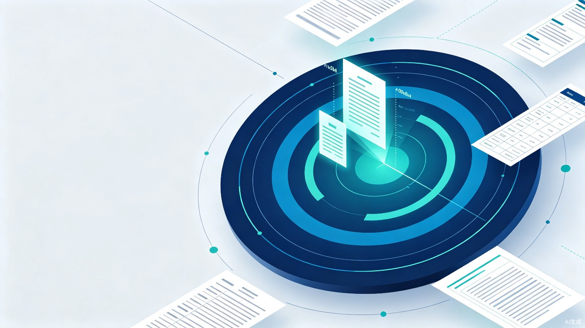

上传一份新规文件，AI 自动生成「条款对照表 + 影响分析 + 合规备忘录初稿」，把合规解读流程从几小时压缩到几分钟。
一个让法务团队从机械比对中解放出来、专注于高价值判断的 AI 合规助手。
每当证监会、中国基金业协会等监管机构发布新规或修订法规，法务/合规团队需要手动逐条比对新旧条款、制作条款对照表、评估业务影响，再用规范法律语言撰写合规备忘录初稿。整个流程重复性高、极易出错、耗时数小时甚至数天，且新规发布后留给团队响应的时间窗口极短。合规雷达将这条"解读流水线"全自动化，让 AI 完成机械比对与初稿起草，人只需做最终的专业判断。
灵感来自一线法务人员的真实工作场景——每次新规一出，团队加班逐条比对，重复劳动、容易遗漏。借鉴"雷达"主动扫描、精准定位、快速响应的理念，让 AI 成为合规团队的雷达：自动扫描新规结构、精准定位变更条款、快速输出解读成果。雷达的"扫描—识别—预警"机制，天然契合合规监测的工作节奏。
基于 Web 的 SaaS 工具，用户上传新规文件（PDF / Word），系统自动完成结构解析、新旧条款对照、影响分析、备忘录起草四个环节，最终输出"条款对照表 + 影响分析 + 合规备忘录初稿"三件套。无需安装、即开即用，支持一键导出标准格式文档，直接进入内部审阅流程。
每一个在监管新规面前争分夺秒的合规与法务从业者。
一份新规的完整解读（对照 + 分析 + 备忘录）往往需要数小时至数天，占用大量人力。
逐条比对条款高度依赖经验与专注度，遗漏或误判变更点的风险始终存在。
新规发布后需快速响应业务调整，但解读流程冗长，响应窗口与工作时长严重不匹配。
规范法律语言撰写要求高，新人难以快速上手产出专业级备忘录。
比对、分析、起草分散在不同文档与工具中，版本混乱、难以协同。
历史解读经验散落个人电脑，无法形成可复用的合规知识库。
从效率工具到行业基础设施，合规雷达带来的是流程重塑与价值释放。
三大核心能力构成"上传—解析—对照—起草"的完整闭环。
flowchart LR
A["📤 上传新规文件\nPDF / Word"] --> B["🔍 新规解析\n结构识别 + 条款提取"]
B --> C["📊 条款对照表生成\n新旧比对 + 变更标注"]
C --> D["⚠️ 影响分析\n风险识别 + 业务评估"]
D --> E["📝 备忘录一键起草\n规范法律语言初稿"]
E --> F["📦 三件套输出\n对照表 + 分析 + 备忘录"]
style A fill:#1e5bb8,color:#fff,stroke:none
style B fill:#00a8a8,color:#fff,stroke:none
style C fill:#1e5bb8,color:#fff,stroke:none
style D fill:#00a8a8,color:#fff,stroke:none
style E fill:#1e5bb8,color:#fff,stroke:none
style F fill:#16223a,color:#fff,stroke:none
用户上传新规文件后，系统自动识别法规的层级结构（章、节、条、款、项），逐条提取条款文本，并通过大模型理解条款语义，标注关键变更类型与适用范围。支持 PDF、Word 等常见监管文件格式，自动处理表格、附件等复杂版式。
系统基于历史法规库与新规解析结果，自动匹配新旧条款对应关系，生成结构化对照表。对每一条款标注变更类型——新增 / 修改 / 删除 / 沿用，并高亮具体变更位置，确保人工复核时一目了然。
| 条款编号 | 变更类型 | 原条款摘要 | 新条款摘要 |
|---|---|---|---|
| 第 12 条 | 修改 | 信息披露期限为 10 个工作日 | 信息披露期限调整为 5 个工作日 |
| 第 15 条 | 新增 | — | 增加私募基金托管人履职要求 |
| 第 18 条 | 删除 | 原备案材料含纸质件 | — |
| 第 20 条 | 沿用 | 风险准备金计提比例 2% | 风险准备金计提比例 2% |
在条款对照与影响分析的基础上，系统调用法律语言大模型，按规范的合规备忘录体例自动生成初稿——包含新规背景、核心变更解读、业务影响评估、整改建议与行动清单。初稿采用标准法律文书语言，法务人员只需审阅修订即可定稿，大幅降低撰写门槛。
新旧逐条比对，变更类型一目了然
风险识别与业务影响评估
规范法律语言初稿，审阅即定稿